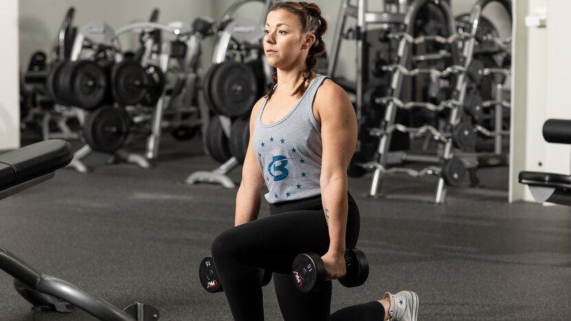
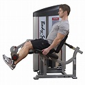

Best Exercise For Legs
Legs Builder #1 – Barbell Back Squat

Squats are king because they're the most challenging leg movement you can do. They work all the lower-body musculature and have been shown to spike muscle-building hormone release. In fact, squatting before doing curls has even been shown to significantly improve arm strength! Don't laugh: Powerlifter and bodybuilder Layne Norton, Ph.D., pairs the two moves in his Legs and Arms Blast workout.
High bar or low bar? That's up to you and your goals. High bar, where the bar rests atop the traps, hits all the leg musculature fairly evenly. Low bar, a favorite of powerlifters, targets the glutes and allows you to lift more weight. Not sure which? Choose the variation that allows you to squat deeper, more comfortably, and without excessively rounding your back.
Legs Builder #2 – Lunge
Like all the movements listed thus far, lunges involve hip and knee extension, which gives you the stimulus for both the thighs and glutes. Another advantage: They can be done weighted in traditional muscle-building rep ranges, with dumbbells or a barbell, or with body weight alone for higher reps.
How high? That's up to you—and your program. Strength and muscle-building coach Paul Carter's bodyweight program Jacked at Home starts off a workout each week with triple-digit walking lunges. You read that right. Give it a try if you want to see how thin the line between strength training and cardio can be.
Legs Builder #3 – Leg Press

Leg press vs. squat is a classic weight-room debate, but one that misses the point. Strength coach and physical therapist John Rusin explains why in his article, "Don't Do High-Rep Squats, Deads, and Bench! Do These Instead." Squats are for doing early in a leg workout and going heavy, he explains, and leg presses are for doing afterward for high reps. Sounds like a recipe for leg growth to us!
Like hack squats, the leg press allows for a variety of foot positions to target the outer quads, inner quads, glutes, or hamstrings. Just be careful not to lower the sled too far! This common mistake will lift your glutes up off the butt pad and cause your lower spine to curl. A rounded back puts you at risk for an injury.
Legs Builder #4 – Leg Extension & Leg Curl Machines
Leg extension and leg curl machines provide a highly targeted approach to building your leg muscles. Both of these movements are an important part of any leg development workout program.
Both leg extension and leg curl machines (also known as hamstring curl machines) come in two different loading styles: selectorized or plate loaded. Selectorized leg extension and leg curl machines come with a built in weight stack with - you guessed, selectable weight plate increments. Plate loaded leg extension and leg curl machines are loaded with weight plates as the user sees fit.